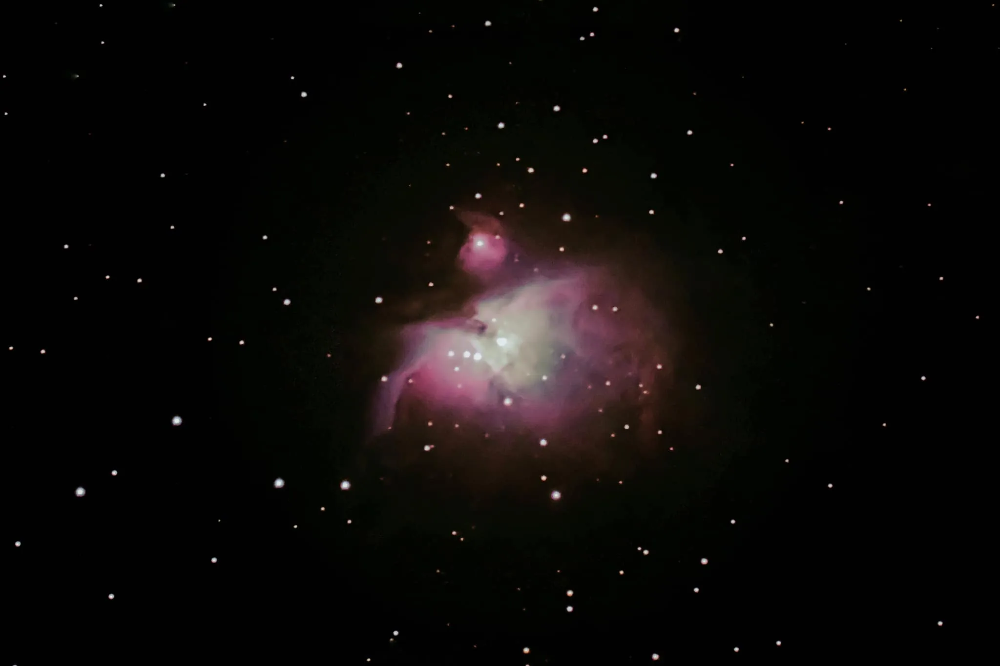
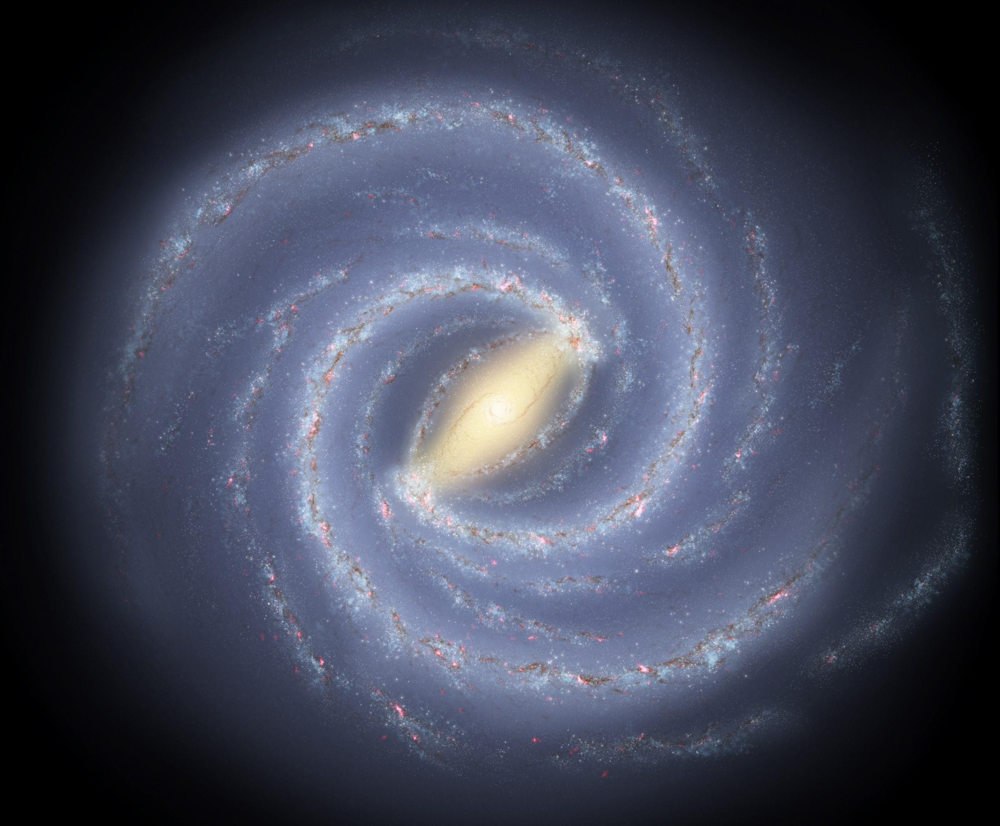

Wat je hier kunt doen
Bekijk elke planeet in 3D, kies een planeet uit de rij, pas de grafische schaal aan en lees direct de kernfeiten.
solar atlas / interactive astronomy
Verken alle planeten in 3D, vergelijk diameter en afstand met een live overzicht, test je kennis in een korte quiz en stap daarna meteen door naar de explorer.
hemellichamen
quizvragen
info page
Bekijk elke planeet in 3D, kies een planeet uit de rij, pas de grafische schaal aan en lees direct de kernfeiten.
De pagina begint bewust als informatie-scherm en de knop bovenaan brengt je naar de interactieve explorer.
De diameter- en afstandsbalken reageren live op de schakelaar, zodat je direct tussen beide weergaven wisselt.
geselecteerde planeet
De ster in het midden van het zonnestelsel.
De ster in het midden van ons zonnestelsel. Geeft licht en warmte aan alle planeten.
grootte info
Deep Space
Het superzware zwarte gat in het centrum van ons melkwegstelsel. Het heeft een massa van meer dan 4 miljoen keer die van de zon.

Een enorme wolk van gas en stof (de Orionnevel) op ongeveer 1.350 lichtjaar afstand, waar voortdurend nieuwe sterren worden gevormd.

Ons eigen melkwegstelsel: een spiraalvormig sterrenstelsel met honderden miljarden sterren, waar ook ons zonnestelsel deel van uitmaakt.
3d models
quiz
Druk na elke vraag op antwoord kiezen. De score verschijnt direct.